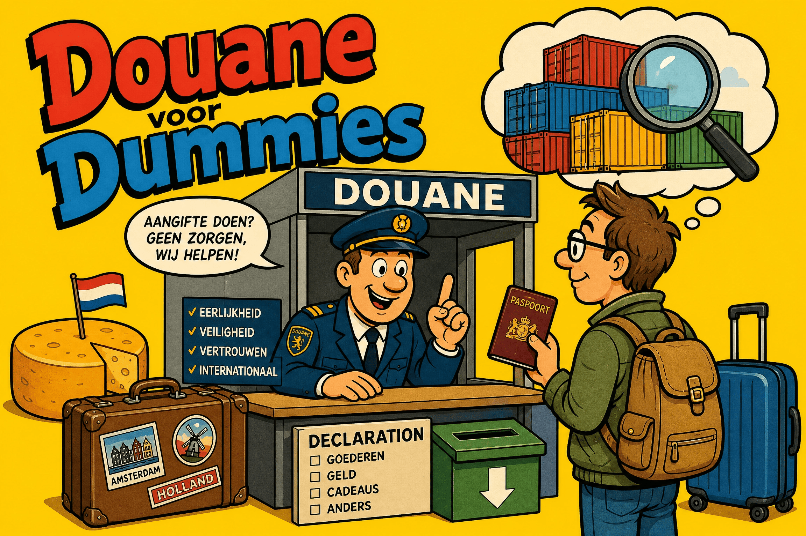
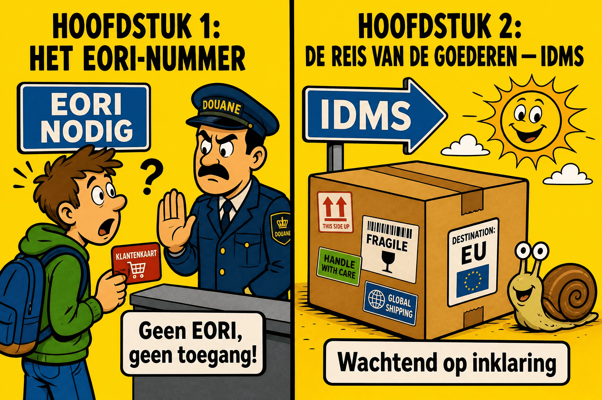
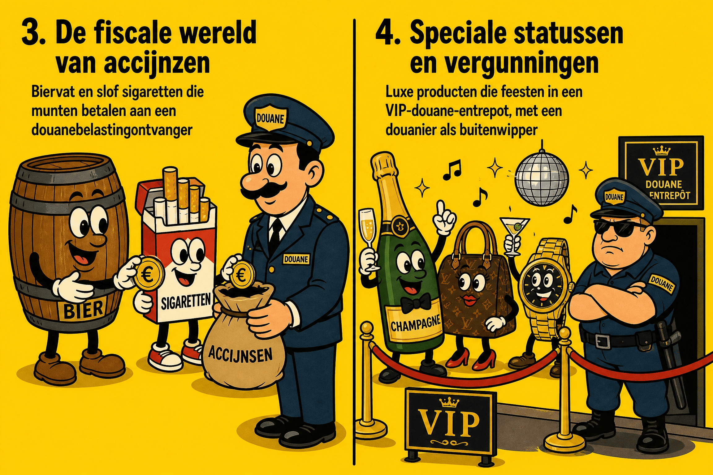
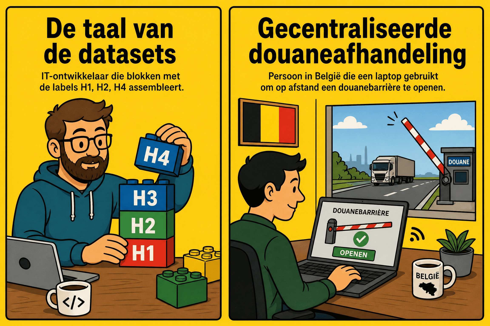
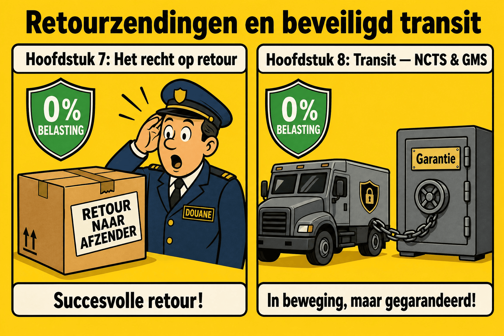
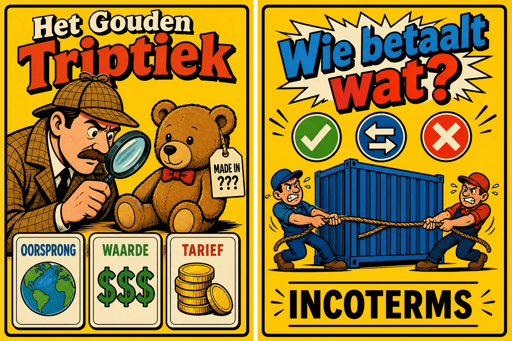
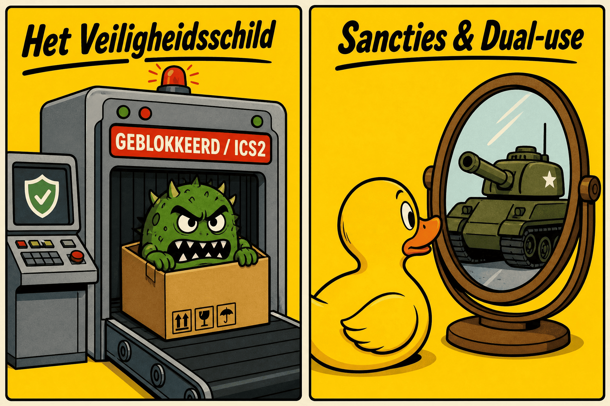
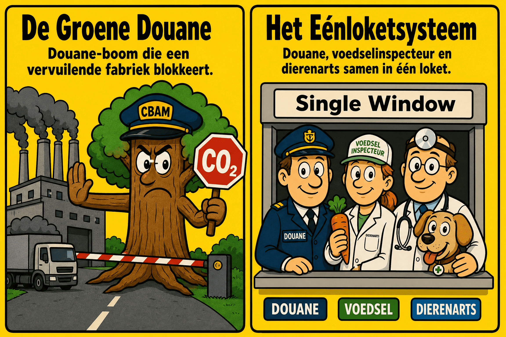
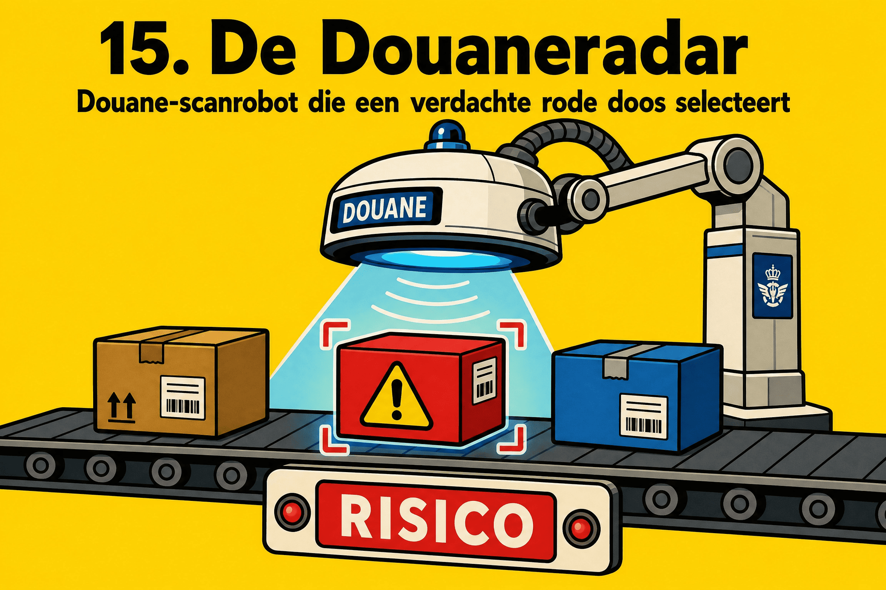

AAD&A - Algemene Administratie Douane & Accijnzen
Juli 2026

De integraal: van EORI tot Groene Douane, het DGU, NCTS en Risicoanalyse.
Een werk geschreven door
Mohamed Amine EL AAJI
Quality Assurance Services (QAS)
Dept. SSDD (Strategische Dienst voor Ontplooiing en Data)
Waarom deze gids?
De wereld van douane en accijnzen wordt vaak gezien als een administratieve vesting, gebouwd op complexe wetteksten, onduidelijke acroniemen en extreem strikte IT-procedures. Toch gaan achter deze schijnbare strengheid fascinerende mechanismen schuil die onmisbaar zijn voor het economische leven van ons land en de Europese Unie.
Dit document is ontstaan uit een eenvoudige wens: vulgarisatie. Het is een poging om technische, douane- en fiscale concepten voor iedereen toegankelijk te maken. Of u nu een nieuwe medewerker bent die bij de administratie begint, een logistieke professional die bepaalde processen wil verduidelijken, of gewoon nieuwsgierig bent naar hoe goederen onze grenzen passeren, deze gids is voor u.
Ik heb ervoor gekozen om een directe, gemoedelijke en pedagogische toon te hanteren, met behulp van analogieën, vereenvoudigde schema's en veel praktijkvoorbeelden. Het doel is niet om de wetteksten te vervangen, maar om u het kompas en de kaart die nodig zijn om rustig in dit ecosysteem te navigeren.
Veel leesplezier, en welkom aan de grens!
— Mohamed Amine EL AAJI
Ik ga je stap voor stap begeleiden door de mechanismen van de douanewetgeving. Welkom bij onze gids "Douane en Accijnzen voor Dummies".
Om goed te beginnen: de douane is niet zomaar een fysieke barrière aan de grenzen. Ze is tegelijkertijd de veiligheidsbewaker en de boekhouder van een immense gedeelde ruimte: de Europese Unie 🇪🇺. Sinds de oprichting van de Douane-unie delen de lidstaten één en dezelfde buitengrens en een gemeenschappelijk douanetarief. Dit betekent dat een goed uit Azië, eenmaal in België ingeklaard, vrij kan circuleren naar Frankrijk of Duitsland zonder nieuwe douanecontroles te ondergaan.
Het werk van de administratie is opgebouwd rond drie grote missies:
Om de douane te begrijpen, moet je eerst haar speelveld visualiseren en weten wie eraan deelneemt.
De Europese Unie vormt één enkel blok tegenover de rest van de wereld: het Douanegebied van de Unie. Binnen dit gebied circuleren Europese goederen vrij van het ene land naar het andere zonder douanecontroles. Aan de buitengrenzen (zoals de haven van Antwerpen) past de douane dezelfde regels toe voor alle goederen die de EU binnenkomen of verlaten.
Let echter op de valkuilen! Het DGU is geen exacte kopie van de politieke of geografische kaart van Europa. Bepaalde politieke gebieden van de EU zijn uitgesloten van de douane, en omgekeerd zijn sommige gebieden buiten de EU er juist in opgenomen.
Ceuta en Melilla : Deze twee steden zijn enclaves op het Afrikaanse continent. Hoewel ze politiek Spaans zijn (en dus in de EU), zijn ze strikt uitgesloten van het Douanegebied van de Unie. Gevolg: het verzenden van goederen naar Ceuta vereist een uitvoeraangifte! (Opmerking: Zelfs als er een akkoord is voor 0% rechten, de douanegrens bestaat en papierwerk is verplicht).
Monaco en San Marino: twee verschillende uitzonderingen. Monaco ligt buiten de EU, maar is via een akkoord met Frankrijk volledig opgenomen in het DGU. Geen douaneaangifte nodig!
San Marino daarentegen is verbonden door een Douane-unie (0% belastingen), maar maakt geen deel uit van het DGU. Gevolg: douaneformaliteiten (T2-document) blijven verplicht!
Büsingen (DE) en Livigno (IT) : Büsingen is een Duitse stad, maar wordt volledig omringd door Zwitserland. Ze is uitgesloten van het Europese DGU en toegevoegd aan het Zwitserse douanegebied. Om iets vanuit België naar Büsingen te sturen, is een uitvoeraangifte (AES) dus strikt verplicht.
Zodra een onderneming deze buitengrens wil overschrijden, is een unieke identificatie vereist: het EORI-nummer (Economic Operators Registration and Identification). Eén enkel nummer is voldoende voor de hele Unie!
In België begint dit met de landcode BE gevolgd door het ondernemingsnummer (10 cijfers).
Een bedrijf uit Namen koopt computers in Tokio 🇯🇵. Ze worden per vliegtuig naar Luik vervoerd. Via het Europese veiligheidssysteem ICS2 moeten veiligheidsgegevens (de ENS) al voor het laden in Tokio naar de douane worden gestuurd. Het EORI-nummer is dan al onmisbaar om de ontvanger te identificeren.
Een particulier koopt een smartphone in de VS voor persoonlijk gebruik. Moet hij een EORI aanvragen? Nee. EORI is enkel voor marktdeelnemers (bedrijven). De administratie gebruikt een algemene code voor particulieren: BEPRIVATEPERSON.
Een bedrijf uit Parijs 🇫🇷 heeft een Frans EORI-nummer. Het importeert goederen via de haven van Antwerpen. Moet het een Belgisch EORI aanvragen? Nee. Het FR-nummer is geregistreerd in de centrale Europese databank (EOS). De Belgische douane raadpleegt deze en valideert de identiteit onmiddellijk.
Vaak delegeert het bedrijf zijn douaneafhandeling aan een douanevertegenwoordiger. Let op de scheiding:
In België gebruikt de administratie moderne IT-systemen voor elke stap:
Voor Invoer 📥
Voor Uitvoer 📤
Voor Vervoer 🔄
Ons bedrijf in Namen ontvangt computers uit Tokio in Luik. In plaats van de douanerechten en BTW direct te betalen, slaan ze die 3 maanden op. De oplossing? Het douane-entrepot. Dit regime schorst alle belastingen. De betaling gebeurt pas bij uitslag (in het vrije verkeer brengen) via IDMS.
Het bedrijf in Namen verkoopt uiteindelijk de helft van deze computers aan een klant in Zwitserland 🇨🇭 (buiten EU). Moeten ze douanerechten betalen? Nee. De EU heft geen rechten bij uitvoer. Aangezien de belastingen geschorst waren, vertrekken ze zonder ooit belast te zijn geweest in Europa. Men gebruikt AES voor de wederuitvoer.
De Belgische vrachtwagen doorkruist Frankrijk 🇫🇷 om naar Zwitserland te gaan, vol met deze onbelaste computers. Om deze reis te beveiligen, gebruikt men NCTS onder het regime van extern douanevervoer (T1) met een volgnummer (MRN) en een financiële zekerheid.
Aan de Zwitserse grens registreert de douane de aankomst en controleert de verzegeling (loodjes). Als alles in orde is (Conform), wordt de Belgische borg vrijgegeven. Maar wat als de zegels verbroken zijn? De Zwitserse douane meldt onregelmatigheden (Incident de transport) in het NCTS! Het systeem blokkeert de financiële borg en start een onderzoek.
In grote havens zoals Antwerpen-Brugge is het beheer van de massale aankomst van containers een logistieke uitdaging. Om deze stromen te stroomlijnen, gebruiken de douane en de havenautoriteiten het IRP (Inbound Release Platform). Dit is een gecentraliseerd digitaal platform dat scheepsagenten, haventerminals en de douane met elkaar verbindt.
Binnen dit havenecosysteem verloopt het beheer van de tijdelijke opslag via een reeks modules:

Douanerechten hebben een economisch doel: ze maken producten van buiten de EU duurder om lokale bedrijven te beschermen. Accijnzen hebben een doelstelling inzake volksgezondheid en ecologie (en vullen de staatskas). Ze belasten alcohol, tabak en brandstoffen om consumptie te reguleren, ongeacht of ze in België of daarbuiten zijn geproduceerd.
Op luchthavens bevinden "Duty Free"-winkels zich in de internationale zone. Producten worden daar verkocht zonder douanerechten, btw en accijnzen, omdat ze bestemd zijn om het Europese grondgebied onmiddellijk te verlaten.
Europa gebruikt het zeer strikte systeem EMCS (Excise Movement and Control System) om deze producten te volgen onder schorsing van rechten, vergezeld van een elektronisch document (e-AD).
Niet verwarren! Het douane-entrepot beheert goederen van buiten de EU (douanerechten/btw). Het fiscale entrepot stelt u in staat om goederen op te slaan met schorsing van accijnzen.
Een groothandelaar in Namen ontvangt wijn uit Bordeaux 🇫🇷 onder dekking van een e-AD (via EMCS). Hij parkeert de lading in zijn fiscale entrepot. Wanneer betaalt hij de Belgische accijns? Op het moment van de uitslag tot verbruik (het verlaten van het entrepot naar de restaurants). Daarvoor gebruikt hij een specifieke webapplicatie genaamd AC4.
En wat als een pallet valt en flessen breken in het entrepot?
Omdat er geen uitslag tot verbruik was, eist de douane geen accijnzen (mits onweerlegbaar bewijs van vernietiging voor de boekhouding).
| Accijnsstatuut | Opslaan? | Verzenden? | Ontvangen? |
|---|---|---|---|
| Erkend entrepothouder | Ja | Ja | Ja |
|
Geregistreerde geadresseerde (Betaalt accijns bij aankomst) |
Nee | Nee | Ja |
|
Geregistreerde afzender (Verzendt na import) |
Nee | Ja | Nee |
| Destinataire / Expéditeur certifié | Mouvements avec rechten déjà acquittés dans un autre État membre. | ||
Onze groothandelaar in Namen heeft geen plaats meer in zijn grote magazijn. Hij wil een pallet Champagne 🇫🇷 bestellen en direct doorverkopen, waarbij hij de belasting onmiddellijk bij aankomst betaalt (zonder schorsing). Het perfecte statuut hiervoor is Geregistreerde geadresseerde.
De douane is niet enkel een censor, het is ook een economische partner die een reeks vergunningen aanbiedt om de internationale handel te vergemakkelijken.
Vandaag bestaan er 22 Europese douanevergunningen die allemaal centraal worden beheerd via een groot Europees portaal: het CDMS (Customs Decisions Management System). Enkele belangrijke:
Motoren uit China importeren, assembleren op auto's in België, en exporteren naar Marokko. De fabriek gebruikt code H4 in IDMS voor totale schorsing van belastingen bij invoer.
Belgische stof naar Tunesië sturen om te naaien, en de afgewerkte pakken opnieuw invoeren. Bij terugkeer betaalt men enkel belastingen op de buitenlandse toegevoegde waarde.
Om te profiteren van actieve veredeling, eist de Staat een financiële borg. Haal deze systemen niet door elkaar:
Een fabriek heeft een zekerheid van 100.000 €. Ze hebben al 90.000 € aan motoren in de fabriek. Een nieuwe container komt aan met 20.000 € aan potentiële taksen. Wat doet FINDA? Het blokkeert de hele container! IDMS splitst de peer niet in twee.
Dit is de hoogste certificering in de douane (Geautoriseerde Marktdeelnemer). Let op: Geldig in de EU, tenzij er een wederzijdse erkenning is (MRA) met derde landen (zoals de VS of Japan).
| Type AEO | Voordelen |
|---|---|
| AEOC (Vereenvoudigingen) | Gemakkelijker toegang tot douaneregelingen, vermindering van de doorlopende zekerheid, minder fysieke controles. |
| AEOS (Veiligheid) | Verlichting van veiligheidscontroles (bv. ENS-aangiften), wederzijdse erkenning (MRA). |
| AEOF (Full) | Cumulatie van alle voordelen. Ideaal voor absolute prioriteit aan de grens. |
Wat gebeurt er als een handelspartner buiten de EU (bv. een Amerikaanse afzender) door zijn eigen douaneautoriteiten als uiterst betrouwbaar wordt beschouwd? Dankzij akkoorden voor wederzijdse erkenning (MRA) tussen de EU en derde landen, erkent de Europese douane dit buitenlandse label als gelijkwaardig aan AEO. Het vertrouwensniveau stijgt en het risico daalt drastisch, wat de internationale stromen vergemakkelijkt.

Vergeet het oude papieren Enig Document (ED). Vandaag gebruikt Europa Datasets (Gegevensreeksen). Ze zijn geclassificeerd per letter:
Tot voor kort profiteerde de e-commerce van een enorm voordeel: elk pakketje met een waarde van minder dan 150 € (de beruchte H7 dataset) kwam Europa binnen zonder één cent douanerechten te betalen (enkel BTW was verschuldigd). Europa heeft een einde gemaakt aan dit systeem om de stroom van goedkope Aziatische pakjes af te remmen!
Vanaf 1 juli 2026 is de douanevrijstelling afgeschaft. Voortaan geldt een forfaitair en tijdelijk douanerecht van 3 € per artikel (per aangiftelijn) op alle afstandsverkopen van minder dan 150 € (B2C).
Dit forfaitaire recht (belastingcode A00) is van toepassing ongeacht of het IOSS-systeem wordt gebruikt. Het doel? Lokale handelaars beschermen tegen oneerlijke concurrentie en de ecologische impact beperken.
Je bestelt op een bekend Aziatisch platform: 1 telefoonhoesje (5 €) en 1 USB-kabel (3 €). Totaal: 8 €. Het pakket is minder dan 150 € (H7 aangifte).
Uitzondering (C2C): Als je tante uit Canada je een zelfgebreide trui van 40 € stuurt (Geschenk van Particulier aan Particulier), is deze belasting van 3 € niet van toepassing!
B1 voor definitieve uitvoer. B2 voor passieve veredeling (OP).
G4 voor tijdelijke opslag (TSD op de kade in afwachting van een beslissing via het IRP).
Waar moeten deze data naartoe? Historisch gezien moesten goederen worden ingeklaard daar waar ze fysiek aankwamen. Met CCE (Centralised Clearance) scheidt Europa de fysieke stroom van de administratieve stroom.
Een bedrijf kan zijn invoeraangifte indienen in het systeem van de eigen lidstaat, zelfs als de goederen in een andere lidstaat aankomen. De twee douaneadministraties communiceren achter de schermen automatisch met elkaar.
Een bedrijf uit Namen importeert speelgoed. Het schip komt aan in de haven van Rotterdam. In plaats van een Nederlandse expediteur te betalen, gebruikt het bedrijf CCE. Het dient zijn H1 in via IDMS (het Belgische systeem) vanuit de zetel in Namen. De Belgische computer contacteert de Nederlandse computer om de container vrij te geven!

Wat gebeurt er als een geëxporteerd goed rechtsomkeert maakt en terugkomt? Dit gebeurt vaak in e-commerce: het regime van de Terugkerende Goederen (Returned Goods Relief).
Als u uw eigen product (reeds ingeklaard in de EU) binnen 3 jaar en in dezelfde staat opnieuw invoert, betaalt u geen nieuwe invoerrechten. De douane verleent een "franchise", op voorwaarde dat u de identiteit van het goed kunt bewijzen.
Een horlogemaker exporteert een horloge naar Zwitserland via AES (B1). De klant merkt een kras op en stuurt het onmiddellijk terug. Bij terugkeer gebruikt de Belgische aangever het IDMS-systeem met de franchise-code (F03) en geeft hij het MRN van de oorspronkelijke uitvoer op. Hij importeert het terug en betaalt 0 € douanerechten en 0 € BTW!
Wanneer een lading door Europa reist zonder belastingen te betalen, gebeurt dit onder de regeling voor douanevervoer via het NCTS. Omdat de Staat een risico neemt, wordt er een financiële zekerheid geëist via de kluis GMS.
Wat gebeurt er als de vrachtwagen aankomt? Het moderne NCTS is uiterst streng geworden.
Zodra de aankomst is geaccepteerd, start er een aftelklok (bv. 15 min). Dit geeft de douane de tijd om te beslissen over een fysieke controle.
Als alles perfect is, wordt de aangifte gemarkeerd als "Conform" (Satisfactory). De borgtocht in GMS wordt vrijgegeven.
Als een loodje (verzegeling) is verbroken of een doos ontbreekt, meldt men "Niet conform". Het NCTS wil dan weten wat de reactie van de houder is: No opposition (hij accepteert de feiten), Opposition (hij betwist), of Undecided (in afwachting).
Een vrachtwagen komt aan in Antwerpen. De agent merkt op dat het nummer van de verzegeling niet overeenkomt met de aangifte. Hij voert in: "State of seals : Not OK". Wat doet NCTS? Het blokkeert onmiddellijk de vrijgave van de borgtocht in het GMS! De douane kan de potentiële rechten claimen, aangezien er mogelijk onderweg gemanipuleerd is.

De vergelijking met drie onbekenden : Soort, Oorsprong, Waarde.
HS / TARIC
Het Paspoort
Maatstaf van Heffing
De douane leest geen beschrijvingen, ze leest cijfers: de eerste 6 cijfers zijn het wereldwijde Geharmoniseerde Systeem (HS), gevolgd door de EU-TARIC (10 cijfers).
Een bedrijf importeert dure tablets (belast), maar de aangever vergist zich en gebruikt de HS-code voor "digitale fotolijsten" (0%). Bij een controle ontdekt de douane dit: boete voor valse aangifte!
Oorsprong : Verwar herkomst (geografisch) en oorsprong (douanestatuut) niet. Preferentiële oorsprong (zoals via een EUR.1-certificaat) kan de rechten tot 0% herleiden.
Waarde : De douane belast de transactiewaarde tot aan de grens van de EU (inclusief transport- en verzekeringskosten).
Je koopt fietsen in Genève (Zwitserse herkomst). Maar de motor is gemaakt in Taiwan, ze hebben er alleen een etiket op geplakt. De echte oorsprong is Taiwanees: het EUR.1 is ongeldig en je betaalt de volle rechten.
Een bedrijf vergeet de 3.000 € transportkosten op te nemen in de aangegeven Waarde (H1). Bij een controle zal men de douanerechten en BTW op die ontbrekende 3.000 € moeten bijbetalen.
De douane wil weten: wie is wettelijk verantwoordelijk voor de aangifte en wie betaalt de belastingen? De Incoterms (3 letters) regelen dit.
Een Chinese leverancier stelt voor om T-shirts "EXW" te leveren. Dat lijkt goedkoop, maar is een slecht idee! Je bent dan als koper verantwoordelijk voor de Chinese uitvoeraangifte, wat onmogelijk is zonder lokale licentie. FOB is veel veiliger.

Vandaag, met ICS2 (Import Control System 2), is de regel: geen data, geen lading. De transporteur moet een veiligheidsaangifte (de ENS) doorsturen naar de EU nog voor het inladen aan de andere kant van de wereld.
Iemand probeert een pakket met explosieven per luchtvracht naar Brussel te zenden. Dankzij de PLACI-module van ICS2 kruist het algoritme de data met Europol-databanken voordat het wordt geladen. Het algoritme geeft "Do Not Load" als waarschuwing. Het pakket stapt het vliegtuig nooit in!
Exporteren is niet altijd een absoluut recht (embargo's). Er is veel aandacht voor Goederen voor tweeërlei gebruik (Dual-Use): goederen ontworpen voor civiele doeleinden, maar die militair kunnen worden gebruikt.
Een Belgisch bedrijf verkoopt chips voor wasmachines aan een land onder embargo. Bij de uitvoeraangifte blokkeert de douane de operatie. Waarom? Het leger aldaar recyclet deze chips voor hun militaire drones. Exportvergunning geweigerd.

Bij import van staal uit een land zonder CO2-belasting, moet de importeur "koolstofcertificaten" aankopen om de prijzen in de EU in evenwicht te brengen.
Om cacao of hout te importeren, moet u met strikte GPS-coördinaten bewijzen dat er geen recente ontbossing plaatsvond. Anders volgt direct een blokkade in de haven.
De douane controleert voedsel, maar werkt niet alleen! Het Uniek Loket (Single Window) is een gigantische datasnelweg waar IDMS automatisch praat met systemen van andere instanties (zoals het FAVV in België).
Een importeur haalt ananassen uit Costa Rica. IDMS vraagt het Single Window of het FAVV het fytosanitair certificaat heeft goedgekeurd. Als de inspecteur in TRACES niet op "OK" heeft geklikt, blokkeert de douane de aangifte binnen één seconde.

Hoe selecteert de douane die ene container om te openen? Ze gebruikt uiterst geavanceerde data-analyse via de regelmotor SEDA 3.0.
Meldingen uit Europa komen via het CRMS (Customs Risk Management System). SEDA berekent een continue Risicoscore (tussen 0 en 1) per aangifte gebaseerd op 4 elementen:
AEO-status verlaagt uw kans op controle. Maar let op: Als SEDA een absoluut Embargo of Blacklist detecteert, vervalt deze wiskundige bonus direct, en gaat de score naar 1 (Verplichte fysieke controle).
Omdat we niet 100% kunnen controleren, is er een drempelwaarde (Cutoff). Aangiften boven deze drempel verschijnen in de MRA (Manual Risk Analysis) interface van de douanier.
De douanier controleert de Gouden Driehoek op afstand (facturen, EUR.1 aanvragen).
De container passeert door een megascanner in de haven.
Het hoogste niveau. De container wordt geopend, en inhoud wordt gecontroleerd (ook met honden).
